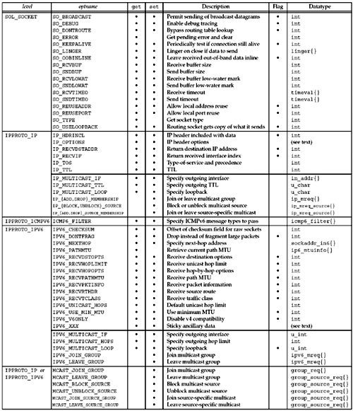
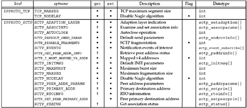

| [ Team LiB ] |
|
7.2 getsockopt and setsockopt FunctionsThese two functions apply only to sockets.
sockfd must refer to an open socket descriptor. level specifies the code in the system that interprets the option: the general socket code or some protocol-specific code (e.g., IPv4, IPv6, TCP, or SCTP). optval is a pointer to a variable from which the new value of the option is fetched by setsockopt, or into which the current value of the option is stored by getsockopt. The size of this variable is specified by the final argument, as a value for setsockopt and as a value-result for getsockopt. Figures 7.1 and 7.2 summarize the options that can be queried by getsockopt or set by setsockopt. The "Datatype" column shows the datatype of what the optval pointer must point to for each option. We use the notation of two braces to indicate a structure, as in linger{} to mean a struct linger. Figure 7.1. Summary of socket and IP-layer socket options for getsockopt and setsockopt. Figure 7.2. Summary of transport-layer socket options. There are two basic types of options: binary options that enable or disable a certain feature (flags), and options that fetch and return specific values that we can either set or examine (values). The column labeled "Flag" specifies if the option is a flag option. When calling getsockopt for these flag options, *optval is an integer. The value returned in *optval is zero if the option is disabled, or nonzero if the option is enabled. Similarly, setsockopt requires a nonzero *optval to turn the option on, and a zero value to turn the option off. If the "Flag" column does not contain a "•," then the option is used to pass a value of the specified datatype between the user process and the system. Subsequent sections of this chapter will give additional details on the options that affect a socket. |
| [ Team LiB ] |
|